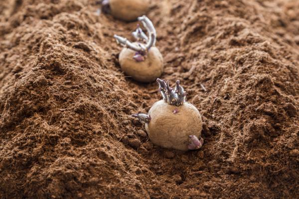

Blog
Micro Riego | Haciendo que el Micro Riego sea Accesible a Nivel Mundial | Rivulis

Elija un Idioma English Español Français Italiano Português Русский Türk עברית Aplicaciones de Cultivo Algodón Arándanos Bananas (Plátanos) Caña de Azúcar Cáñamo Fresas Hortalizas de Campo Abierto Horticultura Estacional Invernadero y Aplicaciones Hidropónicas Maíz Manzanas y Peras Nueces Papas (Patatas) Remolacha Azucarera Riego Enterrado Tomate de industria Viñedos Productos Cintas de Goteo y Laterales de Goteo Goteros Insertados Aspersores y Difusores Tuberías Planas y Tubos Filtros Válvulas Conectores y Accesorios Proyectos Avellanas, Azerbaiyán Aceitunas, Israel Guindas, Serbia Viñedos, China Inteligencia de Riego Experiencias Desde El Campo Aguacates y Bananas (Plátanos), Israel Frutos Rojos, España Algodón, Australia Hortalizas, México Sobre Nosotros Nuestra Historia y Valores Fundamentales Equipo de Gestión Global Presencia Global Carreras MENU Aplicaciones de Cultivo Crop Applications Rivulis understands the challenges you face as a grower from agronomic to economic. Our global Product Development & Irrigation Solutions Design team of expert agronomists, engineers and hydrologists are here to deliver end to end solutions using our comprehensive product portfolio to address your specific field and crop needs. We design, install and support irrigation solutions to help you increase profitability and maximize crop quality and yield with a focus on increasing total system efficiency and productivity, lowering your labor and fertilizer costs, and optimizing water use to improve land use and increase crop certainty. Aplicaciones de Cultivo
Algodón Arándanos Bananas (Plátanos) Caña de Azúcar Cáñamo Fresas Hortalizas de Campo Abierto Horticultura Estacional Invernadero y Aplicaciones Hidropónicas Maíz Manzanas y Peras Nueces Papas (Patatas) Remolacha Azucarera Riego Enterrado Tomate de industria Viñedos Ver todas las Soluciones de Cultivo ProductosProductos
Cintas de Goteo y Laterales de Goteo Cintas de Goteo y Laterales de Goteo Nuestra amplia gama de soluciones de riego por goteo presenta emisores integrados (cintas de goteo) y emisores moldeados (laterales de goteo), junto con modelos compensados por presión, sin drenaje y anti-sifón. Construidos con los más altos estándares de ingeniería y control de calidad, nuestros laterales de goteo y cintas de goteo aseguran la máxima resistencia a la obturación, la máxima uniformidad y el máximo rendimiento en la cosecha. También nos enorgullece presentar a Rivulis X-Pell, la primera solución de laterales de goteo y cintas de goteo repelente de insectos del mundo. Filtros Filtros Los filtros son la primera protección para evitar que partículas contaminantes entren en su sistema de riego. Ofrecemos una amplia gama de productos desde filtros de discos, separadores de arena/hidrociclón, de arena y filtros de malla. Todos los filtros Rivulis son fabricados para proporcionar el más alto nivel de protección mediante una construcción duradera y un excelente rendimiento de filtración. Goteros Insertados Goteros Insertados Con más de 40 combinaciones de goteros insertados, ofrecemos la gama más completa del mercado incluyendo flujos variables, diversas opciones de salida, así como combinaciones de Presión Auto-Compensada (PC), y Presión Auto-Compensada y Anti-Drenante (PCND). Nuestras soluciones cubren desde las aplicaciones estándar en suelo hasta las más avanzadas cómo la producción en sustrato, y son ideales para la agricultura intensiva, invernaderos y huertos. Válvulas Válvulas Tome el control de su sistema de riego con las válvulas Rivulis, diseñadas para lograr una regulación precisa de presión y caudales, sumado a la función de activación remota nuestras válvulas le garantizan protección y un funcionamiento óptimo. Aspersores y Difusores Aspersores y Difusores Nuestra amplia gama de aspersores y difusores se desempeñan temporada tras temporada entregando excelentes rendimientos, calidad constante y eficiencia en la producción de cultivos. Ofrecemos desde aspersores para la producción de hortalizas en campo abierto, en huertos, para protección contra heladas, hasta nebulizadores para la producción en invernaderos y mucho más. Conectores y Accesorios Conectores y Accesorios Rivulis presenta la mejor y una de las más amplias gamas de accesorios para su sistema de riego, desde las arandelas más pequeñas hasta conectores de tubería plana resistentes junto a una gama de equipos de fertirrigación. Tuberías Planas y Tubos Tuberías Planas y Tubos Las tuberías planas y tubos de Rivulis son diseñados con la última tecnología para permitirle transferir agua de manera versátil y duradera cubriendo todas las necesidades de su sistema de riego ya sea al utilizarlas como colectoras de suministro o líneas de transferencia. Nuestra más reciente incorporación, la revolucionaria tubería plana Rivulis H6000 PE, posee salidas directamente inyectadas en la tubería lo que conduce a una vida útil más larga del producto, sin fugas y una instalación fácil y rápida. Ver nuestros productos Proyectos Designing the Right Solution to Meet Your Needs Rivulis delivers complete turnkey solutions of any size, for all customers and across all geographies. We offer the industry’s most extensive micro irrigation product portfolio and a wide range of services based upon our modular design to harvest solutions and through our multiple Global Design Service Centers Designing more than tens of thousands hectare year, we are your partner throughout all project stages from professional project, system and infrastructure design to installation, agronomist expertise, hands-on training and education, in-the-field technical support, financing tools, and logistics to Manna, our satellite-based precise irrigation software to monitor your field and provide irrigation recommendations to optimize your crop yield output. Our technical specialists in the field will closely manage each project working with you to implement the right solution to meet your unique needs and ensure successful long-term results.Proyectos
Avellanas, Azerbaiyán Aceitunas, Israel Guindas, Serbia Viñedos, China Ver nuestras Capacidades de Gestión de Proyectos Inteligencia de Riego Experiencias Desde El Campo Escuche lo que Nuestros Productores Dicen Sobre Nosotros Escuche directamente a los clientes de Rivulis y conozca sus experiencias y los resultados que han logrado utilizando nuestros productos y soluciones de Riego por goteo.Experiencias desde el Campo
Aguacates y Bananas (Plátanos), Israel Frutos Rojos, España Algodón, Australia Hortalizas, México Escuche a Nuestros Productores Sobre NosotrosSobre Nosotros
Nuestra Historia y Valores Fundamentales Equipo de Gestión Global Conozca al Equipo Global de Gestión de Rivulis Nuestros experimentados líderes aportan décadas de experiencia en las industrias agrícolas y manufactureras y están comprometidos a ofrecer soluciones innovadoras de riego a todos los productores del mundo. El equipo se dedica a mantener un ecosistema de éxito para nuestros socios comerciales y productores de todo el mundo. Presencia Global Carreras Contacto Conviértase en Socio Blog Carreras Elija un Idioma English Español Français Italiano Português Русский Türk עברית CREANDO UN FUTURO MAS SOSTENIBLE
PARA TODOS CON SOLUCIONES
DE RIEGO POR GOTEO ACCESIBLES
Sobre Nosotros GROW BEYOND Aplicaciones de Cultivo
Brindamos Soluciones de Riego por Goteo para Cada uno de los Cultivos del Mundo
Viñedos Nueces Invernadero y Aplicaciones Hidropónicas Horticultura Estacional Riego Enterrado Encuentre la Solución para su Cultivo Historias desde el Campo
Escuche lo que los Productores Dicen sobre Nosotros
Verduras y maíz: Rugby Farming Group, Australia Aguacates y Bananas (Plátanos): Kibbutz Nahal Oz, Israel Bayas: Frutas Esther, España Cáñamo: Estados Unidos Ver Recomendaciones de ClientesProductos
Ofrecemos la Cartera Más Amplia y Completa del Mercado
Cintas de Riego y Laterales de Goteo Goteros Insertados Aspersores y Difusores Tuberías Planas y Tubos Explore Nuestros ProductosProyectos
La Solución Correcta para las Necesidades de Riego de Su Proyecto
Avellanas, Azerbaiyán Aceitunas, Israel Guindas, Serbia Viñedos, China Explore Nuestras Capacidades de Gestión de Proyectos
Descubra más
¿Considerando Cultivar Cáñamo? Aquí Encontrará 5 Beneficios de Usar Riego por Goteo
Descubra más>
Presentamos la solución de riego holístico Rivulis para agricultura: una solución integral, de principio a fin, desde la fuente de agua hasta la cosecha, optimizando la producción de su cultivo.
Descubra más>
¿Necesita filtros de malla, de arena o anillas?. Consulte nuestra nueva herramienta de recomendación de filtros.
Descubra más> Estamos aquí para ayudarlo a GROW BEYOND.
Contáctenos para Comenzar. Aplicaciones de Cultivo Algodón Arándanos Bananas (Plátanos) Caña de Azúcar Cáñamo Fresas Hortalizas de Campo Abierto Horticultura Estacional Invernadero y Aplicaciones Hidropónicas Maíz Manzanas y Peras Nueces Papas (Patatas) Remolacha Azucarera Riego Enterrado Tomate de industria Viñedos Productos Cintas de Goteo y Laterales de Goteo Goteros Insertados Aspersores y Difusores Tuberías Planas y Tubos Filtros Válvulas Conectores y Accesorios Proyectos Avellanas, Azerbaiyán Aceitunas, Israel Guindas, Serbia Viñedos, China Sobre Nosotros Nuestra Historia y Valores Fundamentales Equipo de Gestión Global Presencia Global Carreras Política de Calidad Política de Privacidad Contacto Inteligencia de Riego Experiencias desde el Campo Aumentar fuente Disminuir fuente Fuente legible Alto contraste Copyright © 2019 Rivulis – Todos los derechos reservados Utilizamos cookies y otras tecnologías similares para mejorar su experiencia de navegación. Al hacer clic en 'Aceptar', usted autoriza el uso de cookies. Aceptar Ver política
Por favor, visite nuestro sitio
utilizando otro navegador
te invita a EIMA Digital Preview,
del 11 al 15 de noviembre de 2020
Debido a las excepcionales condiciones sanitarias, la feria internacional EIMA en Bolonia es totalmente digital y TOTALMENTE GRATIS .
REGISTRATE AQUÍ¡Puedes visitar nuestro stand 3D Rivulis donde podrás descubrir nuestras innovaciones e interactuar directamente con nuestro equipo!
Puedes participar en nuestras conferencias en línea todos los días, de 9am a 10am (hora de París)
Calendario de conferencias online en eima.it Calendar of Events
Stand y conferencias accesibles a partir del 11 de noviembre de 2020 directamente en la plataforma Eima Digital Preview
¡Hasta pronto en eima.it!
Posted by Jack  Read more
Read more  Comments (15)
Comments (15)  2021.04.03 10:57
2021.04.03 10:57